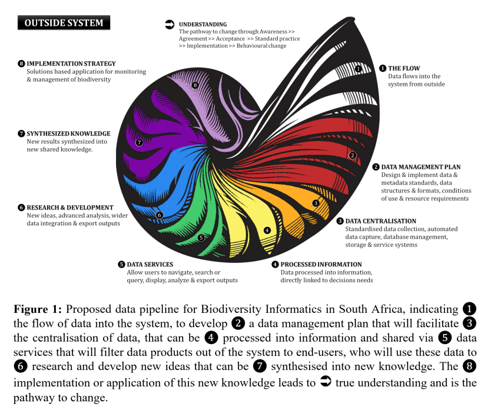

A biodiversity information hub for cooperative environmental monitoring in South Africa
The world is drowning in data, yet thirsty for information and the synthesis of knowledge into understanding. The volume, diversity and speed at which new ecological data are generated is growing exponentially as concerns over biodiversity decline escalate worldwide. Those able to successfully generate, collect, store, share, analyse and communicate the existence of synthesised biodiversity data will become central players in the debate around global biodiversity change. Africa is poised to become a world leader in biodiversity conservation, as it safeguards some of the largest wilderness areas and intact ecosystems in the world. Here, we discuss challenges, highlight opportunities and encourage innovative solutions for biodiversity informatics in South Africa (SA), with relevance for expanded African and global efforts.
We propose to use this symposium to assess the potential for developing a national or regional Biodiversity Informatics Hub, describe the essential components for successful system design, and discuss its implementation and sustainability. We emphasise the importance of developing a culture of cooperation and interoperability among custodians of data to establish operational workflows for data synthesis. Through this symposium we attempt to address the biggest challenge facing biodiversity informatics - misgivings around data sharing and multidisciplinary collaboration that will leverage combined expertise and datasets.
We hope to recommend a system that is free, user friendly, functional, stable, integrative and designed to cater for different data access agreement levels. In this way, multiple stakeholders and decision-makers will have access to valuable biodiversity data that feed results back into the system to support research and biodiversity plans.
